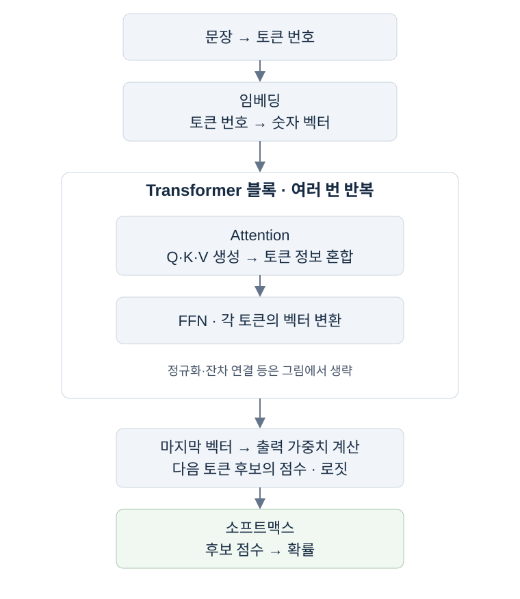
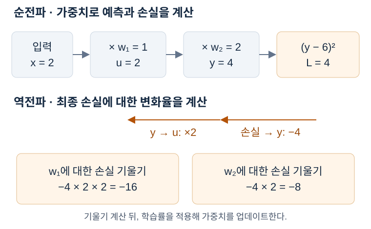
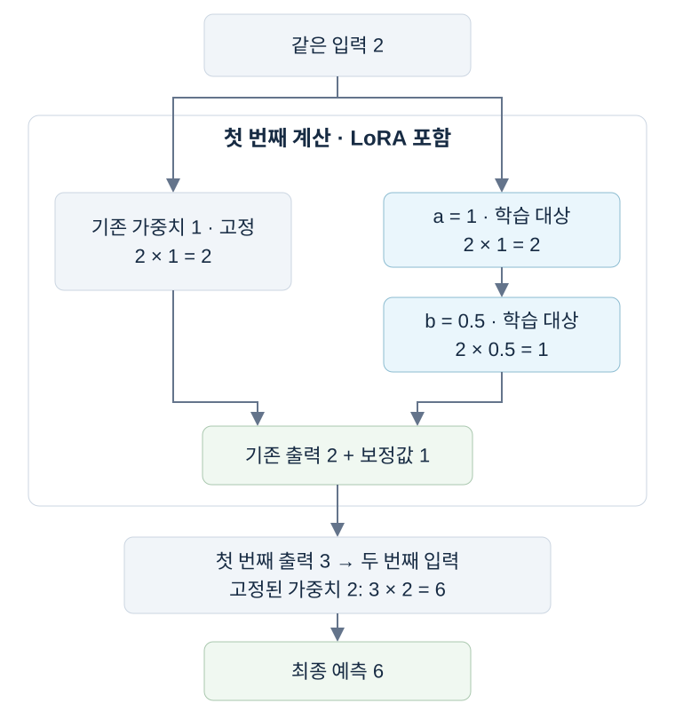
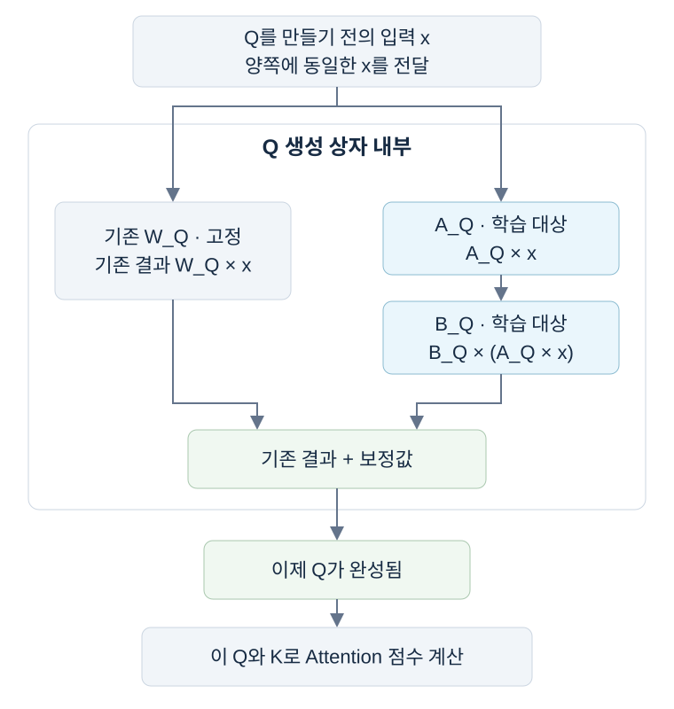
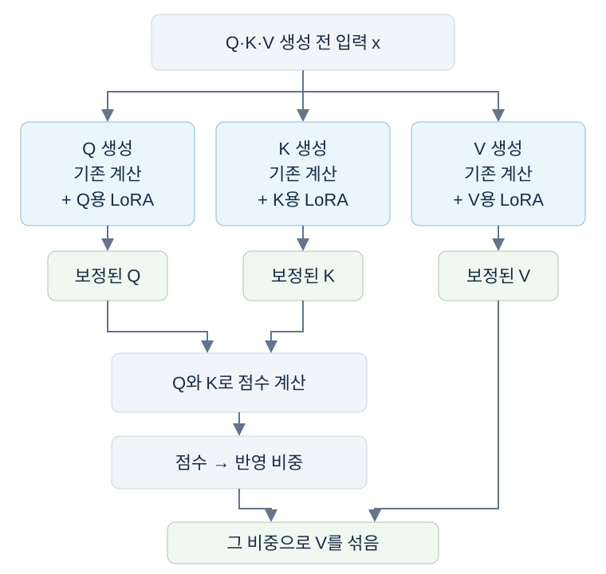
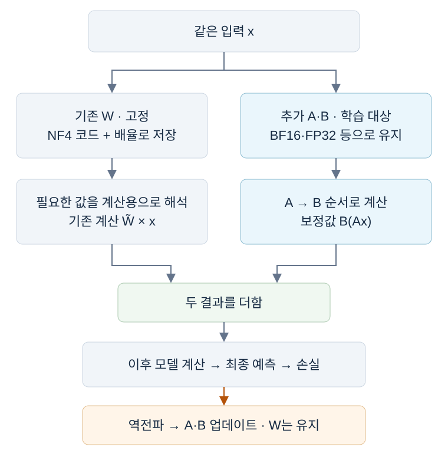

상담 기록에는 “처음 요청한 식당의 예약은 실패했고, 다른 식당의 예약은 완료됐다”는 내용이 있다. 그런데 모델은 첫 예약도 완료됐다고 정리한다. 프롬프트를 구체적으로 고쳐도 이런 오류가 반복된다면, 상담을 읽고 올바르게 정리한 예시를 학습시키는 방법을 생각할 수 있다.
여기서 학습한다는 것은 정답 문장을 모델 파일에 보관해 두는 일이 아니다. 같은 종류의 입력을 받았을 때 올바른 답을 더 잘 만들도록, 모델 내부의 계산에 사용하는 숫자들을 바꾸는 일이다. 그 숫자를 가중치라고 한다.
문제는 모델에 가중치가 아주 많다는 것이다. 모두 업데이트하려면 학습에 필요한 메모리와 계산 부담도 커진다. LoRA는 기존 가중치를 고정하고, 일부 계산 옆에 작은 보정 경로를 붙여 그 부분만 학습한다. QLoRA는 여기에 기존 가중치를 더 적은 비트로 보관하는 방법을 결합한다.
이 구조를 이해하려면 “모델이 답을 만드는 계산”과 “학습이 그 계산을 바꾸는 과정”을 연결해야 한다. 그래서 입력과 가중치에서 출발해 손실과 역전파를 살펴보고, 그중 학습 대상을 A·B로 바꾸면 무엇이 달라지는지 따라간다. 마지막에는 NF4·Q4_K_M·GGUF와 실제 학습 도구가 각각 무엇을 가리키는지 구분한다.
본문에는 개념을 연결하는 설명과 핵심 예제를 두었다. 긴 미분 유도, 행렬 곱셈의 전체 전개, 소스 검증 내역은 각 절의 ‘계산 과정’이나 ‘상세 확인’을 펼쳐서 볼 수 있다. 작은 숫자 예제는 원리 설명용이며 실제 Qwen 모델의 성능 측정값은 아니다.
읽는 순서
- 01–03: 모델이 계산하는 것과 정답을 비교하는 방법
- 04–07: 손실에서 가중치 수정까지 이어지는 학습 과정
- 08–11: LoRA의 보정 경로, 행렬 A·B, 적용 위치와 학습
- 12–14: 메모리와 숫자 표현, 양자화와 QLoRA
- 15–17: 모델 파일과 라이브러리, Q4_K_M 지원 확인 결과
- 18–19: 학습 후 저장·배포와 처음의 질문에 대한 정리
01. 모델의 입력과 가중치와 출력은 서로 다르다
상담 문장을 바꾸는 것과 모델을 학습시키는 것은 무엇이 다를까? 상담 문장은 이번에 계산할 재료이고, 가중치는 그 재료를 어떻게 변환할지 정하는 모델 내부의 숫자다. 같은 모델에 다른 상담을 넣으면 입력이 달라진다. 같은 상담을 학습 전과 후의 모델에 넣으면, 이번에는 계산에 쓰는 가중치가 달라진다.
이 차이를 보기 위해 문장 대신 숫자 하나를 넣는 아주 작은 모델을 생각해 보자. 이 모델이 하는 일은 입력에 가중치를 곱하는 것뿐이다.
| 무엇을 바꿨는가 | 입력 | 가중치 | 계산 결과 |
|---|---|---|---|
| 처음 상태 | 2 | 1 | 2 × 1 = 2 |
| 입력만 바꿈 | 3 | 1 | 3 × 1 = 3 |
| 처음 입력에서 가중치만 바꿈 | 2 | 1.5 | 2 × 1.5 = 3 |
출력이 달라졌다고 모두 학습이 일어난 것은 아니다. 두 번째 행에서는 새 입력을 계산했을 뿐이다. 세 번째 행처럼 계산에 쓰이는 가중치가 바뀌는 것이 학습과 연결되는 변화다. 실제 학습에서는 사람이 1.5를 직접 골라 넣는 대신, 정답과의 차이를 이용해 바꿀 값을 계산한다.
실제 언어 모델은 숫자 하나로 문장을 표현하지 않는다. 숫자 여러 개를 묶은 벡터로 표현하고, 이를 다른 벡터로 바꾸기 위해 가중치 숫자들을 행과 열로 배열한 행렬을 사용한다. 이런 숫자 배열을 차원에 관계없이 부르는 이름이 텐서다.
행렬곱도 출발점은 곱셈과 덧셈이다. 입력 숫자 각각에 가중치를 곱하고, 그 결과를 합쳐 출력 숫자 하나를 만든다. 출력이 여러 개 필요하면 서로 다른 가중치 묶음으로 이 계산을 반복한다. 이렇게 입력으로 무엇을 받고, 어떤 가중치로 계산하고, 무엇을 출력하는지를 구분하면 모델 안의 계산을 추적할 수 있다.
계산 과정 · 입력 벡터와 가중치 행렬을 실제로 곱하면
숫자 하나일 때는 입력을 x, 가중치를 w, 출력을 y라고 쓰면 다음과 같다.
이 문서에서 입력 벡터는 세로로 놓인 열벡터로 쓴다. 가중치 행렬을 W라고 하면 식은 Wx다. 아래 예제는 입력 숫자 두 개를 출력 숫자 두 개로 바꾸는 계산이다.
첫 행의 가중치 1·2가 첫 번째 출력 17을 만들고, 둘째 행의 가중치 3·4가 두 번째 출력 39를 만든다. 입력은 같지만 각 출력에 사용하는 가중치가 다르다.
언어 모델에서도 이 관계는 같다. 다만 이런 계산이 여러 단계로 이어진다. 그 계산 순서를 펼치면 Transformer의 구조가 된다.
02. Transformer에서는 어떤 계산이 이어지는가
모델은 문장을 그대로 곱셈할 수 없으므로 먼저 숫자로 바꾼다. 문장을 토큰이라는 처리 단위로 나누고 각 토큰에 번호를 붙인다. 토큰은 단어 하나일 수도 있고 단어의 일부일 수도 있다. 이어서 임베딩이 각 번호에 대응하는 숫자 벡터를 가져온다.
이제 모델 내부에는 숫자 벡터들이 있다. 이 벡터들은 여러 Transformer 블록을 통과하면서 변환된다. 첫 번째 블록의 출력이 두 번째 블록의 입력으로 들어가고, 다시 그 결과가 다음 블록으로 이어진다. 마지막 벡터를 이용해 다음에 올 토큰 후보들의 점수를 계산한다. 후보 점수의 이름이 로짓, 점수를 확률로 바꾸는 계산의 이름이 소프트맥스다.

블록 안에서는 토큰의 정보를 섞고 다시 변환한다
상담 문장에 “그 시간으로 해주세요”가 나오면, “그 시간”이 무엇인지 앞의 문장을 봐야 알 수 있다. Attention은 이런 문맥을 다룰 때 각 토큰의 정보를 얼마나 반영할지 계산하는 부분이다. 사람이 관계를 일일이 지정하는 것이 아니라 가중치로 점수를 계산한다.
Attention이 토큰 사이의 정보를 섞은 뒤에는 FFN 또는 MLP가 각 토큰의 벡터를 다시 변환한다. 실제 블록에는 숫자의 크기 등을 조절하는 정규화와, 변환 전 값을 결과에 더하는 잔차 연결도 있다. 이들은 이후 계산과 학습이 안정적으로 이어지도록 돕는다.
“앞쪽 레이어”와 “뒤쪽 레이어”라는 말은 이 계산 순서를 가리킨다. 앞쪽 레이어에서 가중치로 계산한 출력이 뒤쪽 레이어의 입력으로 들어간다. 따라서 앞쪽 가중치를 바꾸면 뒤쪽으로 넘어가는 입력이 달라진다. 뒤쪽 가중치까지 수정하지 않아도, 새 입력으로 계산하므로 뒤쪽 출력은 바뀔 수 있다.
Q·K·V는 입력을 서로 다른 가중치로 변환한 결과다
Attention은 정보를 섞기 전에 현재 벡터에서 Q·K·V라는 세 가지 값을 만든다. 같은 입력을 받지만 각각 다른 가중치 행렬을 사용한다. W_Q는 Q를 만드는 가중치이고, Q는 그 계산에서 나온 결과다. W_K와 K, W_V와 V도 같은 관계다.
입력이 바뀌면 Q·K·V는 새로 계산된다. 반면 추론 중인 모델의 가중치 W_Q·W_K·W_V는 그대로다. 이 구분은 뒤에서 LoRA를 붙이는 위치를 이해할 때 중요하다.
Q와 K를 비교하면 토큰 사이의 점수가 나온다. 이 점수를 반영 비중으로 바꾸고, 그 비중만큼 V를 섞어 Attention의 결과를 만든다. 즉, Q·K는 얼마나 반영할지 정하는 계산에, V는 실제로 섞이는 내용에 관여한다.
현재 블록의 입력 벡터들
→ Q·K·V를 각각 생성
→ Q와 K를 비교해 점수를 계산
→ 점수를 반영 비중으로 변환
→ 그 비중으로 V를 섞음
→ 뒤의 출력 변환·잔차 연결·FFN으로 이어짐
위 흐름은 위치를 파악하기 위한 단순화다. 실제 모델의 여러 Attention head, 위치 정보, 미래 토큰을 가리는 마스크 등은 생략했다. Qwen3 모델 설명
표기 확인 · Q와 W_Q를 식에서 구분하기
현재 블록에서 Q·K·V를 만들기 직전의 벡터를 x라고 부른다. 문장 원문이나 토큰 번호가 아니라 앞선 계산과 정규화를 거쳐 들어오는 벡터다.
| 기호 | 역할 |
|---|---|
| x | 세 계산에 들어가는 현재 입력 |
| W_Q, W_K, W_V | 모델이 보관하는 세 가중치 행렬 |
| Q, K, V | 같은 입력을 각 가중치로 변환한 세 결과 |
이렇게 계산하면 모델의 예측은 나오지만, 아직 그 예측을 어떻게 고칠지는 정하지 않았다. 학습하려면 먼저 예측을 정답과 비교해야 한다.
03. 정답과 예측을 비교한 숫자가 손실이다
상담 모델이 예약 실패를 완료라고 답했다면, 사람은 원문과 답안을 비교해 잘못된 부분을 찾을 수 있다. 학습 프로그램에도 이에 대응하는 평가 기준이 필요하다. 현재 예측이 정답과 얼마나 어긋나는지를 숫자로 만든 것이 손실이다.
손실은 모델이 최종적으로 줄이려는 값이다. 다만 “답이 틀렸으니 손실 1점”처럼 반드시 사람이 점수를 붙이는 방식은 아니다. 언어 모델에서는 정답 토큰에 얼마의 확률을 줬는지를 이용해 계산할 수 있다.
정답을 더 가능성 높은 답으로 만들도록 학습한다
예를 들어 “나는 밥을” 뒤의 정답이 “먹었다”라고 하자. 설명을 위해 “먹었다”를 토큰 하나로 취급한다. 모델이 “먹었다”에 10%, 다른 후보들에 나머지 확률을 줬다면 정답을 자신 있게 예측하지 못한 것이다. 같은 정답에 70%를 주는 모델은 그 예제를 더 잘 맞힌다.
교차 엔트로피는 이런 차이를 손실로 계산하는 방법이다. 정답이 하나로 정해진 다음 토큰 학습에서는 정답 토큰의 확률을 사용하며, 확률이 낮으면 큰 손실을, 높으면 작은 손실을 준다.
| 정답 “먹었다”에 준 확률 | 계산되는 손실 | 학습에서의 의미 |
|---|---|---|
| 10% | 약 2.30 | 정답의 확률을 더 높여야 함 |
| 70% | 약 0.36 | 정답을 더 잘 예측한 상태 |
| 100% | 0 | 이 위치의 정답에 확률을 전부 줌 |
상담 원문과 지시문을 입력으로 주고 정답 답안을 학습할 때도, 답안의 토큰마다 이런 비교를 할 수 있다. 여러 위치의 손실을 합하거나 평균하고, 설정에 따라 정답 답안 부분만 손실에 포함한다.
여기서 Q나 K의 정답을 따로 사람이 지정하지는 않는다. Q·K·V가 Attention 결과에 영향을 주고, 그 결과가 뒤의 계산을 거쳐 최종 토큰 확률에 영향을 주기 때문이다. 학습은 이 전체 연결을 이용한다.
계산 과정 · 교차 엔트로피의 −ln은 무엇을 계산하는가
정답이 하나로 지정된 다음 토큰 학습에서는 교차 엔트로피가 다음처럼 단순해진다.
은 손실, 은 정답 토큰에 부여한 확률이다. 은 자연로그다. 일 때 를 몇 제곱하면 해당 숫자가 되는지 나타낸다. 예를 들어 이므로 이다. 앞의 마이너스 부호로 양의 손실을 만든다.
| 정답 토큰의 확률 | 계산 | 손실 |
|---|---|---|
| 0.10 | 약 2.3026 | |
| 0.70 | 약 0.3567 | |
| 1.00 | 0 |
손으로 계산할 때는 작은 숫자 모델로 줄여 본다
언어 모델의 전체 확률 계산을 바로 미분하면 본래 질문인 “가중치를 어떻게 바꾸나?”를 보기 어렵다. 그래서 원리를 확인할 때는 입력 숫자 하나에 가중치를 곱해 정답 숫자를 예측하는 모델을 사용한다. 실제 언어 모델과 다른 손실 함수를 쓰지만, 손실에서 기울기를 구해 가중치를 바꾸는 과정은 연결된다.
입력은 2, 현재 가중치는 1, 정답은 6으로 정하자. 예측은 2 × 1 = 2다. 정답보다 4 작다. 이 차이를 제곱한 제곱 오차를 손실로 삼으면 손실은 16이 된다.
입력 2 × 가중치 1 = 예측 2
예측 2 − 정답 6 = 차이 −4
차이 −4를 제곱 = 손실 16
제곱하기 때문에 정답보다 크든 작든 차이가 있으면 양의 손실이 생긴다. 정답과 같으면 손실은 0이다. 이제 필요한 것은 이 손실을 줄이려면 가중치 1을 어느 방향으로 바꿔야 하는지 알아내는 일이다.
표기 확인 · 예측과 제곱 오차를 식으로 쓰기
입력을 x=2, 가중치를 w, 정답을 t=6이라고 둔다. 예측값 기호는 y 위에 작은 모자를 붙인 것으로, 정답과 구분하기 위한 표기다.
w에 1을 넣으면 예측은 2, 손실은 16이다. 이 제곱 오차는 위의 교차 엔트로피와 다른 함수이며, 손계산을 쉽게 하기 위한 예제 선택이다.
04. 기울기는 가중치에 대한 손실의 순간변화율이다
현재 예측이 2이고 정답이 6이므로, 이 작은 모델에서는 가중치를 늘리면 도움이 될 것 같다. 하지만 큰 모델에서는 가중치가 수많은 계산에 얽혀 있어서 그 방향을 눈으로 고를 수 없다. 각 가중치를 조금 늘렸을 때 최종 손실이 늘어나는지 줄어드는지를 계산해야 한다.
먼저 실제 값을 조금 바꿔 보자. 입력 2와 정답 6은 그대로 두고 가중치만 1에서 1.01로 올린다.
| 비교하는 상태 | 가중치 | 예측 | 손실 |
|---|---|---|---|
| 바꾸기 전 | 1 | 2 | 16 |
| 바꾼 후 | 1.01 | 2.02 | 15.8404 |
가중치는 0.01 늘었고 손실은 0.1596 줄었다. 둘을 나누면 가중치가 변한 양에 비해 손실이 얼마나 변했는지를 나타낼 수 있다.
손실 변화량 ÷ 가중치 변화량
= (15.8404 − 16) ÷ (1.01 − 1)
= −0.1596 ÷ 0.01
= −15.96
마이너스라는 것은 가중치를 늘린 방향에서 손실이 줄었다는 뜻이다. 다만 이 값은 1에서 1.01까지의 구간을 비교한 결과다. 움직이는 폭을 점점 작게 해서 현재 지점에서의 변화율을 구하면 −16이 된다. 이것을 그 가중치에 대한 손실의 기울기, 또는 순간변화율이라고 한다.
기울기에는 두 정보가 함께 들어 있다. 부호는 어느 방향으로 움직일지 알려 주고, 크기는 현재 그 가중치 변화에 손실이 얼마나 민감한지 알려 준다. 이때 크기는 현재 지점 근처의 정보이지, 그만큼 크게 이동해도 된다는 보장은 아니다.
| 손실 기울기 | 손실을 줄이려는 방향 |
|---|---|
| 양수 | 가중치를 줄이는 쪽 |
| 음수 | 가중치를 늘리는 쪽 |
| 0 | 이 기울기만으로는 이동하지 않음 |
학습이 직접 바꾸는 것은 기울기가 아니라 가중치다. 기울기는 현재 상태에서 계산한 판단 근거다. 가중치를 바꾸고 다시 계산하면 기울기도 새로 구해야 한다.
그래서 손실 16과 기울기 −16은 서로 다른 질문의 답이다. 손실 16은 지금 예측이 정답에서 얼마나 어긋났는지, 기울기 −16은 지금 가중치를 조금 늘릴 때 그 손실이 어떻게 변하는지를 말한다. 가중치를 어느 쪽으로 수정할지 판단할 때 사용하는 것은 두 번째 정보다.
또한 “기울기 −8”처럼 숫자만 말하면 기준이 빠진다. 같은 예제라도 예측값을 바꿀 때의 손실 변화율과 가중치를 바꿀 때의 손실 변화율은 다르다. 항상 무엇에 대한 기울기인지 함께 말해야 한다.
계산 과정 · −15.96이 −16으로 이어지는 이유와 예측값 기준 −8
가중치 변화량을 라고 쓰면, 두 지점 사이의 평균변화율은:
분자는 손실 변화량, 분모는 가중치 변화량이다. 분모가 새 가중치 자체나 학습률인 것은 아니다.
같은 예제 에서 을 로 바꿔 보자.
| 조건 | 가중치 | 예측 계산 | 손실 계산 |
|---|---|---|---|
| 바꾸기 전 | 1 | ||
| 바꾼 후 | 1.01 |
가중치를 조금 늘렸더니 손실이 줄었다. 이 구간의 평균변화율이 음수라는 뜻이다. 더 정확하게 현재 지점의 순간변화율을 구하려면 를 0에 가깝게 보낸다.
이 을 현재 가중치에 대한 손실의 기울기라고 한다. 미분 기호로는 다.
같은 상황에서 예측값 자체에 대한 손실 기울기는 다른 숫자다. 현재 예측은 2이므로 예측을 로 바꾸어 계산하면:
이 −8은 예측값을 기준으로 한 순간변화율이고, −16은 가중치를 기준으로 한 순간변화율이다. 무엇을 변화시키는지까지 말해야 기울기의 의미가 정해진다.
모든 가중치를 조금씩 바꿔 모델 전체를 재실행하는 것은 비효율적이다. 실제 학습에서는 계산 단계별 미분 규칙을 연결해서 기울기를 구한다. 이것이 여러 레이어의 학습을 가능하게 하는 역전파로 이어진다.
05. 여러 레이어에서는 최종 손실에 대한 기울기를 구한다
가중치 하나만 있는 모델에서는 가중치와 예측의 관계가 바로 보였다. Transformer처럼 여러 계산이 이어지면, 앞쪽 가중치가 바꾼 값이 뒤의 계산들을 모두 거쳐야 최종 예측이 된다. 따라서 중간 출력이 아니라 최종 예측과 정답에서 계산한 손실을 기준으로 앞쪽 가중치를 평가해야 한다.
이를 보기 위해 작은 모델에 계산 하나를 추가하자. 입력 2에 첫 가중치 1을 곱하고, 그 결과에 둘째 가중치 2를 곱한다. 정답은 계속 6이다.
입력 2 → 첫 가중치 1을 곱함 → 중간 출력 2
→ 둘째 가중치 2를 곱함 → 최종 예측 4
→ 정답 6과 비교 → 손실 4
앞선 한 층 모델과 달리 뒤에서 2를 한 번 더 곱했으므로, 출발점의 예측도 2가 아니라 4가 되었다. 모델을 바꿨을 때는 비교 기준도 다시 계산해야 한다.
앞쪽의 변화는 뒤쪽 계산을 통해 최종 결과에 반영된다
둘째 가중치는 2로 두고 첫 가중치만 1에서 1.01로 늘려 보자. 첫 출력은 2에서 2.02가 된다. 둘째 계산은 새로 들어온 2.02에 여전히 2를 곱하므로, 최종 예측은 4에서 4.04가 된다.
여기서 중간 출력은 2.02 − 2 = 0.02, 최종 예측은 4.04 − 4 = 0.04만큼 변했다. 뒤에서 2를 곱하는 계산이 첫 변화에도 적용된 것이다. 서로 다른 레이어의 출력끼리 직접 뺀 비교가 아니라, 각 단계에서 바꾸기 전과 후를 비교한 것이다.
역전파는 각 가중치에 대한 손실의 순간변화율, 즉 기울기를 구하는 과정이다. “이 가중치를 아주 조금 늘리면 최종 손실이 얼마나 늘거나 줄어드는가?”를 가중치마다 계산하는 것이다.
그 계산에는 앞쪽의 변화가 뒤쪽 계산을 거쳐 전달되는 관계를 사용한다. 각 계산이 입력의 작은 변화를 몇 배로 전달하는지 연결해서 곱하는 규칙이 연쇄법칙이다. 역전파는 최종 손실 쪽에서 시작해 앞쪽 가중치까지 이 규칙을 적용한다.
기울기를 구한 다음에는 학습률 × 기울기를 기존 가중치에서 빼서 값을 바꾼다. 이것이 단순 경사하강법의 업데이트다. 역전파는 기울기를 계산하고, 경사하강법은 그 기울기로 가중치를 수정한다. 두 과정의 역할을 구분하면 된다.

이 예제에서 계산되는 손실 기울기는 첫 가중치에 대해 −16, 둘째 가중치에 대해 −8이다. 둘 다 늘리는 쪽이 손실을 줄이는 방향이지만, 같은 양을 움직였을 때의 영향은 서로 다르다.
한 가중치씩 바꾸어 보는 실험은 이 영향을 분리해서 확인하려는 것이다. 실제 학습에서도 반드시 첫 번째 가중치만 바꿔야 한다거나, 가장 큰 기울기 하나만 골라야 한다는 뜻은 아니다. 실제 레이어에는 가중치 원소가 많으므로 원소마다 이런 기울기가 생긴다.
계산 과정 · 첫 가중치 −16과 둘째 가중치 −8을 직접 구하기
앞선 한 층 예제에 뒤쪽 계산 하나를 추가한다. 이제 두 가중치가 최종 손실에 각각 어떤 영향을 주는지 확인한다. 모델이 바뀌었으므로 초기 예측과 손실도 다시 계산한다.
입력 x = 2
첫 번째 가중치 w₁ = 1
두 번째 가중치 w₂ = 2
정답 t = 6
첫 번째 출력 u = x × w₁ = 2 × 1 = 2
최종 예측 y = u × w₂ = 2 × 2 = 4
손실 L = (y − 6)² = (4 − 6)² = 4
식으로는 , , 다. 첫 번째 출력 가 아니라 최종 예측 를 정답과 비교한다.
한 가중치씩 움직이는 것은 영향을 구분하기 위해서다
두 실험 모두 동일한 초기 상태 에서 출발한다. 두 실험을 연달아 수행해 값을 누적하는 것이 아니다.
| 실험 | 첫 번째 출력 u | 최종 예측 y | 손실 L | 손실 변화 ÷ 바꾼 가중치 변화 |
|---|---|---|---|---|
| 원래 상태 | 4 | 기준 | ||
| 만 1.01로 | 3.8416 | |||
| 만 2.01로 | 3.9204 |
첫 번째 실험의 0.02와 0.04는 서로 다른 단계에서 측정한 전후 변화량이다.
첫 번째 출력의 변화: 2.02 − 2 = 0.02
최종 예측의 변화: 4.04 − 4 = 0.04
뒤쪽 계산이 여전히 2를 곱하기 때문에, 앞에서 생긴 0.02 변화가 최종 출력에서는 0.04가 된다. 0.04는 첫 번째 출력과 두 번째 출력을 직접 뺀 숫자가 아니다.
변화량을 0으로 보내면 각각의 정확한 기울기는 다음과 같다.
따라서 , 이다. 는 다른 가중치는 현재 값으로 두고, 지목한 가중치 하나에 대한 변화율을 본다는 표기다.
연쇄법칙은 이어진 계산의 변화율을 곱한다
같은 기울기를 계산 단계를 따라 구할 수도 있다.
- 이므로, 에 대한 의 변화율은 2다.
- 이고 현재 이므로, 에 대한 의 변화율은 2다.
- 이고 현재 이므로, 에 대한 손실 변화율은 −4다.
마지막 −4도 직접 계산할 수 있다. 예측을 에서 로 바꾸면:
이제 첫 번째 가중치에서 최종 손실까지 연결한다.
두 번째 가중치는 에 직접 들어간다. 현재 이므로:
이어진 계산의 변화율을 곱하는 규칙이 연쇄법칙이고, 이를 손실에서 앞쪽으로 적용해 기울기를 계산하는 과정이 역전파다.
실제 한 레이어에는 가중치가 많으므로 레이어 전체에 기울기 숫자 하나만 생기는 것이 아니라, 각 가중치 원소마다 기울기가 생긴다.
06. 학습률과 경사하강법은 가중치를 얼마나 바꿀지 정한다
기울기를 구하면 방향은 알 수 있지만, 그 방향으로 얼마나 움직일지는 아직 정하지 않았다. 작은 변화에서는 손실이 줄어도 너무 크게 움직이면 정답을 지나칠 수 있다. 기울기에 곱해 실제 이동량을 조절하는 값이 학습률이다.
가장 단순한 업데이트 방법인 경사하강법은 기울기에 학습률을 곱한 뒤, 그 값을 기존 가중치에서 뺀다.
새 가중치 = 기존 가중치 − 학습률 × 손실 기울기
이 순서에서 학습률은 기존 가중치가 아니라 기울기에 곱한다. 기울기가 음수이면 음수를 빼므로 가중치가 증가한다. 학습률이 0.01이라고 해서 항상 0.01씩 움직이는 것은 아니다.
두 가중치의 기울기가 −16과 −8인 예제에 공통 학습률 0.01을 적용하면 다음과 같다.
| 학습 대상 | 실제 계산 | 새 가중치 |
|---|---|---|
| 첫 가중치 | 1 − 0.01 × (−16) | 1.16 |
| 둘째 가중치 | 2 − 0.01 × (−8) | 2.08 |
공통 학습률을 썼지만 각각 0.16과 0.08만큼 움직였다. 각 가중치의 손실 기울기가 달랐기 때문이다. 두 기울기는 같은 업데이트 전 상태에서 계산하고, 새 예측을 만들 때는 바뀐 두 가중치를 모두 사용한다.
앞에서 기울기를 확인하려고 가중치를 1에서 1.01로 바꿨을 때의 0.01은 비교할 두 지점 사이의 간격이었다. 여기서 정한 학습률 0.01은 이미 구한 기울기에 곱하는 값이다. 예제에서 숫자를 같게 골랐을 뿐 역할은 다르다. 실제 역전파는 학습률만큼 가중치를 미리 움직여 기울기를 구하지 않는다. 현재 계산의 미분 규칙으로 기울기를 구한 뒤, 업데이트 단계에서 학습률을 사용한다.
새 가중치로 계산할 때도 입력은 2다. 첫 계산에서 2 × 1.16 = 2.32를 만들고, 둘째 계산에 그 결과를 넣어 2.32 × 2.08 = 4.8256을 얻는다. 예측이 정답 6에 가까워졌고, 차이를 제곱한 손실도 4에서 약 1.38로 줄었다.
이 과정을 데이터에 반복 적용하는 것이 학습이다. 역전파가 기울기를 구하고, 최적화기가 그 기울기로 가중치를 바꾼다. 최적화기는 경사하강법 같은 업데이트 규칙을 실행하는 부분이다.
두 가중치를 반드시 함께 바꿔야 하는 것은 아니다
학습 대상을 첫 가중치 하나로 제한해도 이 예제의 손실을 줄일 수 있다. 첫 가중치만 1.16으로 바꾸면 예측은 4.64, 손실은 약 1.85다. 어떤 가중치를 학습 대상으로 정할지와 정한 가중치를 어떻게 업데이트할지는 별개의 선택이다. LoRA는 바로 이 학습 대상 선택을 바꾼다.
학습률이 너무 커도 문제가 생긴다. 같은 상태에서 학습률을 0.1로 잡으면 두 가중치가 2.6과 2.8이 되고, 예측이 14.56으로 정답을 크게 넘는다. 손실도 약 73.27로 증가한다. 기울기를 계산했다는 사실만으로 어떤 이동량에서도 손실 감소가 보장되지는 않는다.
실제 설정에서는 가중치 묶음마다 다른 학습률을 줄 수도 있다. Adam 같은 최적화기는 기울기의 과거 통계까지 이용한다. 아래 손계산은 이 복잡성을 더하기 전의 공통 학습률을 쓰는 단순 경사하강법이다.
계산 과정 · 업데이트 전후 손실과 큰 학습률의 결과
역전파가 기울기를 구했다면, 이제 그 기울기를 이용해 가중치를 바꾼다. 가장 단순한 규칙인 경사하강법은 다음과 같다.
는 학습률이다. 기울기에 학습률을 곱한 뒤 기존 가중치에서 뺀다. 학습률을 기존 가중치에 곱하는 것이 아니며, 항상 0.01씩 더하는 것도 아니다.
두 층 예제에서 공통 학습률을 로 정하면:
| 대상 | 현재 기울기 | 공통 학습률 | 실제 가중치 변화 |
|---|---|---|---|
| −16 | 0.01 | +0.16 | |
| −8 | 0.01 | +0.08 |
학습률은 같아도 각 가중치의 기울기가 달라서 이동량이 달라진다. 여기서는 같은 초기 상태에서 계산한 두 기울기로 두 가중치를 함께 업데이트한다.
업데이트 후에는 두 값 모두 새 값을 사용해 처음부터 다시 계산한다.
첫 번째 출력 = 2 × 1.16 = 2.32
최종 예측 = 2.32 × 2.08 = 4.8256
새 손실 = (4.8256 − 6)² = 1.37921536
기존 손실 4보다 줄었다. 가중치를 바꾸면 다음 역전파에서 계산하는 기울기도 달라질 수 있다.
기울기가 큰 가중치 하나만 고르는 것은 아니다
학습 대상으로 지정한 가중치마다 자신의 기울기를 사용한다. 특정 가중치만 학습하도록 정할 수도 있지만, 일반 경사하강법이 매번 가장 큰 기울기 하나를 골라 업데이트하는 것은 아니다.
하나만 움직여도 손실이 줄 수 있다. 만 1.16으로 바꾸고 를 유지하면:
학습 대상을 하나로 제한할지 둘 다 쓸지는 별도의 선택이다. 또한 학습률이 너무 크면 손실이 증가할 수 있다. 같은 기울기에 을 적용하면:
w₁ = 1 − 0.1 × (−16) = 2.6
w₂ = 2 − 0.1 × (−8) = 2.8
예측 = 2 × 2.6 × 2.8 = 14.56
손실 = (14.56 − 6)² = 73.2736
방향이 맞더라도 너무 멀리 이동하면 정답에서 더 멀어질 수 있다. 레이어나 파라미터 묶음마다 다른 학습률을 정하는 설정도 가능하지만, 위 예제에서는 하나의 공통 학습률을 사용했다. Adam 같은 실제 최적화 방법은 기울기의 과거 통계도 이용하므로 위의 단순 경사하강법과 업데이트 식이 다르다.
코드에서도 기울기 계산과 업데이트는 나뉜다
학습 코드에 등장하는 이름은 이 역할을 구분하면 읽기 쉽다. 먼저 이전 기울기를 비우고 현재 모델로 예측한다. 손실을 계산한 뒤 backward()가 기울기를 만들고, step()이 실제 가중치를 바꾼다.
optimizer.zero_grad() # 이전 기울기를 비운다
prediction = model(x) # 현재 가중치로 예측한다
loss = loss_fn(prediction, target)
loss.backward() # 손실에 대한 각 가중치의 기울기를 구한다
optimizer.step() # 그 기울기로 가중치를 업데이트한다
이는 역할을 보여 주는 코드 골격이며 실제 Qwen 학습 실행 결과가 아니다. PyTorch 자동 미분 설명
07. 가중치를 고정해도 그 계산은 역전파에 쓰인다
학습할 가중치를 일부만 선택했다면, 선택하지 않은 가중치는 고정할 수 있다. 고정한다는 뜻은 그 숫자를 학습으로 업데이트하지 않는다는 것이다. 모델의 계산에서 지운다는 뜻은 아니다.
여기서 확인하려는 것은 일부 숫자만 수정하더라도 모델 전체의 최종 손실을 기준으로 학습할 수 있는가이다. 이를 이해하면 기존 모델 전체를 고정하고, 나중에 추가한 작은 부분만 학습하는 LoRA로 이어갈 수 있다. 첫 가중치만 바꾸는 아래 예제는 그 관계를 보여 주기 위한 선택이며, 실제 학습 대상을 항상 첫 레이어로 제한한다는 규칙은 아니다.
두 층 예제에서 둘째 가중치를 2로 고정하자. 첫 가중치를 바꿔 중간 출력이 2에서 2.02가 되면, 둘째 계산은 여전히 새 입력에 2를 곱한다. 최종 예측은 4에서 4.04가 된다. 둘째 가중치가 그대로여도, 앞쪽 변화가 최종 결과에 반영되는 크기는 그 가중치 2에 의해 결정된다.
그래서 첫 가중치가 손실에 미치는 영향을 구할 때는 둘째 계산도 거쳐야 한다. 다만 둘째 가중치 자체를 어떻게 고칠지는 구할 필요가 없다. 여기에는 서로 다른 질문 두 개가 있다.
- 둘째 가중치를 바꾸면 손실이 얼마나 변하는가? 둘째 가중치를 학습하지 않으므로 업데이트용으로는 필요 없다.
- 둘째 계산에 들어오는 값이 바뀌면 손실이 얼마나 변하는가? 앞쪽 가중치를 학습하려면 필요하다.
LoRA에서도 이 구분이 그대로 적용된다. 모델 내부에 새로 붙인 학습 가능한 부분을 어댑터라고 한다. 앞쪽 어댑터의 값을 바꾸면 뒤쪽 블록으로 들어가는 값이 달라진다. 어댑터를 얼마나 수정할지 알려면 그 변화가 나머지 모델을 지나 최종 손실에 미치는 영향까지 구해야 한다. 그래서 기존 모델을 고정해도 그 모델을 지나는 역전파가 필요하다.
계산 과정 · 고정된 가중치 2가 기울기 −16에 들어가는 위치
두 층 예제에서 를 고정하고 만 학습한다고 하자. 첫 번째 가중치의 기울기는 여전히:
고정된 도 첫 번째 출력의 변화가 최종 예측에 얼마나 반영되는지 결정한다. 따라서 자체를 업데이트하지 않아도, 그 연산을 거쳐 의 기울기를 구해야 한다.
| 구분 | 고정된 두 번째 계산에서 필요한가 |
|---|---|
| 를 업데이트하기 위한 가중치 기울기 | 를 학습하지 않으므로 불필요 |
| 입력 에 대한 변화율 | 앞쪽 의 기울기를 구하는 데 필요 |
이 차이가 LoRA에서도 중요하다. 앞쪽 블록에 붙인 A·B가 손실에 미치는 영향을 구하려면 그 뒤의 고정된 모델 계산들을 거슬러야 한다.
코드에서의 구분 · 가중치 고정, no_grad, detach, eval
PyTorch에서 다음 기능들은 서로 같지 않다.
| 기능 | 하는 일 |
|---|---|
가중치의 requires_grad=False |
그 가중치 자체의 기울기를 계산하지 않도록 한다. 입력이 기울기를 필요로 하면 그 계산 경로는 남을 수 있다. |
no_grad() |
그 범위에서 자동 미분용 계산 기록을 만들지 않는다. 필요한 경로 전체에 사용하면 앞쪽 학습도 끊길 수 있다. |
detach() |
특정 텐서를 이전 계산 기록에서 분리한다. |
eval() |
Dropout 등 일부 연산의 동작 모드를 바꾼다. 가중치 고정이나 역전파 중단을 뜻하지 않는다. |
LoRA의 기존 가중치를 고정한다는 이유로 모델 전체를 no_grad()로 실행하는 것은 다른 처리다. PyTorch 기울기 제어 설명
이제 기존 모델의 가중치를 모두 고정한 채 학습하는 상황을 생각할 수 있다. 기존 가중치를 아무것도 바꾸지 않는다면, 예측을 바꾸기 위해 새로 학습할 숫자가 들어가는 계산 경로를 추가해야 한다. LoRA가 추가하는 A·B가 그 역할을 한다.
08. LoRA는 기존 계산에 작은 보정 계산을 더한다
기존 모델의 가중치를 전부 고정하면, 원래 계산에 쓰던 숫자는 더 이상 바뀌지 않는다. 그래도 모델의 답을 바꾸려면 같은 입력을 받아 추가로 계산하는 작은 경로를 만들 수 있다. 원래 계산의 결과에 이 경로의 결과를 더하고, 새 경로에 있는 숫자만 학습하는 것이다.
예를 들어 어떤 내부 계산이 입력 2에 기존 가중치 1을 곱해 2를 만들고 있다고 하자. 이 계산 옆에 같은 입력 2를 받아 보정값 1을 만드는 경로를 붙이면, 두 결과를 더한 출력은 3이 된다. 뒤쪽 계산에는 원래의 2 대신 3이 전달된다. 기존 가중치 1은 그대로인데 모델 내부의 출력은 달라진다.
LoRA는 이 보정 경로를 작은 가중치 행렬 A와 B로 만든다. 입력을 A로 먼저 계산하고, 그 결과를 B로 계산해 보정값을 만든다. 이렇게 추가한 학습 가능한 부분을 LoRA 어댑터라고 부른다. A와 B의 숫자도 사람이 원하는 정답에 맞춰 직접 써 넣는 것이 아니라, 손실의 기울기로 업데이트한다.
학습하는 것은 A·B의 숫자이고, 보정값은 입력을 A·B로 계산할 때마다 나오는 결과다. 따라서 항상 같은 상수를 더하는 구조는 아니다. 학습이 끝나 A·B를 고정해 사용하더라도, 들어온 입력에 따라 보정값은 달라질 수 있다.
같은 입력
├─ 기존 가중치 W로 계산 ───────── 기존 출력 ─┐
└─ 새 가중치 A로 계산 → B로 계산 ─ 보정값 ──┤ 더함 → 다음 계산의 입력
기호로 쓸 때 입력은 x, 보정된 출력은 y다. 기존 출력은 Wx, 보정값은 B(Ax)이므로 두 결과를 더하면 된다. 아래 식은 보정 배율을 1로 둔 경우다.
여기서 중요한 위치는 최종 문장이 나온 다음이 아니라, 선택한 내부 가중치 계산 옆이다. 아래 그림에서는 첫 번째 계산에만 LoRA를 붙였다. 작은 숫자로 위치를 보여 주기 위해 a=1, b=0.5를 직접 골랐으며, 학습 결과로 얻은 값은 아니다.

원래 경로의 출력은 2이고, 보정 경로에서는 2 × 1 × 0.5 = 1을 만든다. 합친 3을 다음 계산이 받아 2를 곱하므로 최종 예측은 6이다. 보정된 내부 출력이 나머지 모델을 통과하면서 최종 답에 영향을 주는 구조다.
이때 A·B를 쓰는 이유는 보정 경로를 작게 만들기 위해서다. 숫자 하나씩인 a·b로는 얼마나 작아지는지 보이지 않으므로, 실제로 행렬 안에 들어가는 숫자 개수를 살펴봐야 한다.
09. 왜 행렬 하나 대신 A와 B 두 개를 쓰는가
보정값을 만드는 데 행렬을 꼭 두 개 써야 하는 것은 아니다. 큰 행렬 하나를 붙여도 된다. LoRA가 A와 B로 나누는 이유는 행렬 두 개에 들어가는 숫자의 합을, 큰 행렬 하나의 숫자 수보다 적게 만들 수 있기 때문이다.
입력 숫자 4개를 받아 보정값 4개를 만드는 경우를 보자. 보통의 가중치 행렬 하나로 계산하면 출력 하나마다 가중치 4개가 필요하다. 출력이 4개이므로 4 × 4 = 16개를 학습해야 한다.
대신 입력 4개 → 중간값 1개 → 보정값 4개로 계산을 나눌 수 있다. A는 입력을 중간값 하나로 만드는 숫자 4개를, B는 그 중간값을 출력 4개로 만드는 숫자 4개를 갖는다. 합치면 8개다.
A가 하나로 모으고 B가 네 개로 펼친다
아래 숫자는 계산을 보기 위해 직접 고른 값이다. 입력은 네 숫자가 모두 1인 벡터로 정한다. A는 가로 한 줄이고, B는 세로 한 줄이다.
먼저 A의 각 숫자에 대응하는 입력을 곱하고 더한다. 1 × 1 + 2 × 1 + 0 × 1 − 1 × 1 = 2이므로 중간값은 2다.
이제 B의 네 숫자에 각각 그 2를 곱한다. 첫 출력은 1 × 2 = 2, 둘째는 2 × 2 = 4, 셋째는 3 × 2 = 6, 넷째는 4 × 2 = 8이다. 결과적으로 A와 B에 든 숫자 8개로 보정값 [2, 4, 6, 8]을 만들었다.
| 단계 | 받는 값 | 하는 계산 | 내보내는 값 |
|---|---|---|---|
| A | 입력 [1, 1, 1, 1] | 네 입력에 가중치를 곱해 합함 | 중간값 2 |
| B | A의 출력 2 | 각각 1배·2배·3배·4배 | 보정값 [2, 4, 6, 8] |
이 보정값을 같은 입력으로 계산한 기존 출력에 더한다. 실제 실행에서 큰 보정 행렬을 매번 만들어 둘 필요는 없다. 입력을 A에 통과시키고 그 결과를 B에 통과시키면 된다.
행렬 계산 전체 · 16개짜리 C와 8개짜리 A·B가 이 예제에서 같은 결과를 만드는 이유
큰 보정 행렬 C 하나를 사용하는 경우
입력 4개를 받아 보정값 4개를 만든다고 하자. 입력은 로 정한다. 는 가로로 쓴 배열을 세로로 바꾸는 전치 표기다.
4×4 행렬 C 전체를 학습하면 16개 숫자를 각각 조정한다.
작은 A와 B로 같은 보정 행렬을 표현하는 경우
다음과 같이 정한다.
먼저 A가 입력 4개를 중간값 하나로 만든다.
그다음 B가 그 중간값으로 보정값 4개를 만든다.
A와 B 자체를 곱해 보면 왜 같은지 확인할 수 있다.
| 방식 | 학습할 숫자 |
|---|---|
| C를 직접 학습 | 개 |
| A·B를 학습 | 개 |
그림으로는 4개 입력 → 1개 중간값 → 4개 보정값이다. 보정 행렬 C를 실제로 매번 만들어 놓을 필요 없이 를 계산할 수 있다.
숫자를 줄인 만큼 만들 수 있는 보정에도 제약이 생긴다
중간값이 하나뿐이면 B는 그 값의 배수를 조합해 출력할 수밖에 없다. 따라서 아무 4×4 보정 행렬이나 숫자 8개로 똑같이 표현할 수 있는 것은 아니다. 위 예제는 A·B로 정확히 표현할 수 있는 보정을 골랐다.
LoRA는 완성된 큰 보정 행렬을 먼저 학습한 다음 무조건 둘로 쪼개는 방식이 아니다. 처음부터 작은 A·B를 두고, 그 구조로 표현 가능한 범위 안에서 손실을 줄이는 보정을 찾는다. 학습할 숫자를 줄이는 대신 보정의 자유도를 제한하는 셈이다.
rank는 A와 B 사이에 둘 중간값의 개수다
설정의 rank r은 이 중간값을 몇 개 둘지 정한다. r=1이면 A가 중간값 하나를 만들고, r=2이면 서로 다르게 계산한 중간값 두 개를 만든다. B는 그 두 값을 각각의 비중으로 조합해 출력하므로 더 다양한 보정을 표현할 수 있다.
| 입력 4개·출력 4개 | A의 크기 | B의 크기 | 학습할 숫자 |
|---|---|---|---|
| 중간값 1개, r=1 | 1×4 | 4×1 | 8개 |
| 중간값 2개, r=2 | 2×4 | 4×2 | 16개 |
이 작은 예제는 r=2로 올리면 숫자 수의 절약이 사라진다. 실제로는 기존 행렬에 비해 r을 작게 잡는다. 예를 들어 4096×4096 행렬 전체는 약 1,678만 개의 숫자인데, r=8인 A·B는 8×4096 + 4096×8 = 65,536개다. 약 256분의 1로 줄어든다. 이는 크기 설명용 예이고 특정 Qwen 레이어의 실측 크기는 아니다.
rank를 늘리면 표현할 수 있는 보정 범위가 넓어진다. 하지만 학습할 숫자도 늘어나며, 평가 성능까지 반드시 좋아지는 것은 아니다.
계산 과정 · 일반적인 행렬 크기, 파라미터 수, r=2의 계산
입력 개수를 , 출력 개수를 , 중간값 개수를 이라고 하면:
설정에서 말하는 LoRA rank 은 이 중간 차원이다. 수학적으로 가 표현하는 독립적인 변화 방향의 수는 최대 이며, 실제 행렬의 rank가 반드시 과 같아야 하는 것은 아니다.
4개 입력·4개 출력에서 로 바꾸면:
첫 번째 보정값은 다. 하나의 중간값만 배율을 바꾸던 구조에서 서로 다르게 계산한 두 중간값을 조합할 수 있게 된 것이다.
| 4→4 보정의 설정 | A 크기 | B 크기 | 학습할 숫자 |
|---|---|---|---|
| 1×4 | 4×1 | 8 | |
| 2×4 | 4×2 | 16 |
이 작은 예제는 에서 개수 절약이 없어진다. 실제로 숫자를 줄이려면 기존 행렬 크기에 비해 을 작게 잡아야 한다. 예를 들어 4096×4096 계산에 을 사용하면 큰 보정 행렬은 16,777,216개, A·B는 65,536개로 256분의 1이다. 이는 크기 설명용 예이며 특정 Qwen 레이어의 실측 크기가 아니다.
rank를 늘리면 표현 가능한 보정 범위가 넓어지고 학습할 숫자도 늘어난다. 평가 성능이 반드시 좋아진다는 보장은 없다.
추가 설정 · 보정 배율 alpha/r과 학습률의 차이
표준 LoRA에서는 보정 결과에 배율 를 곱한다.
은 A와 B 사이의 중간 차원이고, 는 보정의 배율을 정하는 설정이다. 학습률은 가중치 업데이트의 크기, 는 순전파에서 보정값에 곱하는 배율이다. 서로 다른 값이다. 문서의 손계산 예제는 , 편향과 Dropout 없음으로 단순화한다. LoRA 원문, PEFT LoRA 설정
10. LoRA는 Q·K·V를 만드는 계산에 붙일 수 있다
Transformer에서 Q를 만드는 계산을 떠올려 보자. 어떤 입력 벡터를 기존 가중치 W_Q로 계산하면 Q가 나온다. 이 Q를 만드는 계산 옆에 LoRA를 붙일 수 있다.
동작은 다음과 같다. 같은 입력을 두 경로에 보낸다. 한쪽은 W_Q로 기존 Q를 계산하고, 다른 쪽은 새 A·B로 보정값을 계산한다. 두 결과를 더한 값이 최종 Q가 되고, 그 Q가 K와 비교되는 Attention 계산에 들어간다.

그림의 입력 x는 Q 생성에 들어가기 직전의 값이다. 앞선 블록의 계산을 이미 거쳤을 수 있지만, 지금 선택한 Q 생성 계산은 아직 거치지 않았다. A·B가 받는 것도 바로 이 x다. 이미 계산된 Q를 받아 A와 B를 차례로 곱하는 배치와 구분해야 한다.
Q·K·V마다 보정 경로를 따로 둘 수 있다
K를 만드는 계산과 V를 만드는 계산도 같은 방식으로 보정할 수 있다. Q에 붙인 A·B, K에 붙인 A·B, V에 붙인 A·B는 각각 다른 학습 대상이다. 아래 그림은 세 곳을 모두 선택한 예다.

Q와 K로 점수를 만든 뒤 그 비중으로 V를 섞기 때문에, Q를 바꾸어도 K를 바꾸어도 점수가 달라질 수 있다. V를 바꾸면 비중을 적용해 섞는 내용이 달라진다. K를 반드시 제외해야 한다는 규칙은 없다. Q만, Q·V만, Q·K·V 모두를 선택할 수 있고 Attention의 출력 변환이나 FFN의 가중치 계산도 대상이 될 수 있다.
수식으로 확인 · Q·K·V마다 같은 입력으로 두 경로를 계산한다
Q에 붙인 어댑터를 A_Q·B_Q, K와 V에 붙인 어댑터를 각각 A_K·B_K와 A_V·B_V라고 쓰자. 배율을 1로 둔 식이다.
각 식의 왼쪽 Q·K·V는 보정까지 포함한 결과다. 오른쪽 두 항은 같은 입력 x를 받으며 각자 계산한 결과를 더한다.
블록 번호와 블록 안의 계산 위치를 각각 고른다
몇 번째 Transformer 블록인지와 그 블록 안의 어떤 가중치 계산인지를 함께 지정한다. 예를 들어 두 번째 블록의 Q·V 계산을 선택할 수 있다. “레이어에 LoRA를 붙인다”는 말만으로는 이 위치가 분명하지 않으므로, 블록 전체를 말하는지 그 안의 Q·K·V 같은 개별 계산을 말하는지 구분해야 한다.
| 설명용 블록 번호 | LoRA를 붙일 계산 | 별도 A·B 쌍의 수 |
|---|---|---|
| 첫 번째 | Q | 1 |
| 두 번째 | Q·V | 2 |
| 세 번째 | 없음 | 0 |
| 네 번째 | Q·K·V | 3 |
위 배치에는 총 6쌍의 A·B가 있다. 같은 A·B 한 쌍을 여섯 곳에서 공유하는 것이 아니다. 기존 모델 가중치는 모두 고정하고 선택한 위치의 A·B를 학습할 수 있다.
PEFT에서는 target_modules로 대상 계산을 지정하고, 지원하는 모델 구조에서는 layers_to_transform으로 블록을 제한한다. q_proj처럼 실제 코드의 모듈 이름을 사용하며, 블록마다 다른 선택을 하려면 전체 경로나 패턴을 적절히 지정해야 한다. 구현마다 이름과 지정 방법은 다르다. PEFT LoRA API
위치는 사람이 설정하고, 선택한 위치에서 어떤 보정이 필요한지는 학습 데이터와 손실을 통해 A·B가 학습한다. 그 업데이트 자체는 기존 가중치를 학습할 때와 같은 원리다.
11. A와 B도 최종 손실의 기울기로 학습한다
LoRA를 붙였다고 별도의 정답이나 새로운 학습 원리가 생기지는 않는다. 입력을 모델 끝까지 계산하고, 최종 예측을 정답과 비교해 손실을 구한다. 역전파로 이번에는 기존 W 대신 A·B 각각의 손실 기울기를 구하고, 그 기울기에 따라 A·B를 업데이트한다.
작은 예제로 실제로 무엇이 바뀌는지 보자. 입력은 2, 고정된 기존 가중치는 첫 계산에서 1, 둘째 계산에서 2다. 원래 최종 예측은 2 × 1 × 2 = 4이고, 정답은 6으로 정한다. 첫 계산에만 LoRA를 붙이고, 보정 경로의 a는 1, b는 0으로 시작한다. 두 값 모두 학습 대상이며 학습률은 0.01로 정한다.
보정값 0에서 시작해 필요한 보정을 학습한다
처음 보정값은 2 × 1 × 0 = 0이다. 원래 출력에 0을 더하므로 모델은 기존과 똑같이 4를 예측한다. 보통 LoRA에서 A를 작은 무작위 값, B를 0으로 시작하는 것은 학습 시작 시 기존 모델의 출력을 유지하기 위해서다. 여기서는 손계산을 위해 a=1을 쓴다. PEFT 초기화 설명
이 상태에서 b를 늘리면 보정값이 생겨 최종 예측도 커진다. 예측 4가 정답 6에 가까워질 수 있다. 반면 a만 바꿔 봐야 b가 0이어서 보정값은 여전히 0이다. 그래서 첫 역전파에서는 b의 기울기가 −16, a의 기울기가 0으로 나온다. a를 고정한 것이 아니라, 현재 값에서 a만 바꾸는 일이 출력에 영향을 주지 않는 것이다.
경사하강법의 규칙대로 b는 0 − 0.01 × (−16) = 0.16으로 바뀐다. a는 기울기가 0이라 이번에는 1 그대로다. 이제 보정값이 2 × 1 × 0.16 = 0.32가 되므로, 첫 출력 2에 이를 더해 2.32를 다음 계산에 보낸다. 다음 계산은 고정된 2를 곱해 4.64를 예측한다.
| 비교하는 값 | 업데이트 전 | 업데이트 후 |
|---|---|---|
| 기존 첫·둘째 가중치 | 1, 2 | 1, 2 그대로 |
| 어댑터 a, b | 1, 0 | 1, 0.16 |
| 최종 예측 | 4 | 4.64 |
| 정답 6과의 제곱 오차 | 4 | 1.8496 |
기존 가중치는 하나도 바꾸지 않았는데, 새로 붙인 계산의 숫자를 바꿔 예측을 정답 쪽으로 움직였다. 실제 행렬 A·B에도 같은 원리가 적용된다. 다음 학습에서는 b가 더 이상 0이 아니므로 a를 바꾸는 것도 출력에 영향을 주고, a의 기울기도 생긴다.
계산 과정 · a·b의 기울기, 한 번의 업데이트, 다음 a 기울기까지
이번 예제는 임의로 를 골랐던 배치 그림과 달리, 초깃값에서 실제 한 번의 업데이트를 손으로 계산한다.
| 항목 | 값 | 업데이트 여부 |
|---|---|---|
| 입력 | 2 | 학습 대상 아님 |
| 기존 첫 번째 가중치 | 1 | 고정 |
| 기존 두 번째 가중치 | 2 | 고정 |
| LoRA a | 1 | 학습 대상 |
| LoRA b | 0 | 학습 대상 |
| 정답 | 6 | 학습 대상 아님 |
| 학습률 | 0.01 | 이 예제에서 정한 설정 |
계산 규칙은:
1회차 순전파
보정값 = 2 × 1 × 0 = 0
첫 번째 출력 = 2 + 0 = 2
최종 예측 = 2 × 2 = 4
손실 = (4 − 6)² = 4
B를 0으로 시작하면 보정값이 0이므로 초기 출력은 기존 모델과 같다. 일반적인 PEFT LoRA 초기화는 A를 작은 무작위 값, B를 0으로 둔다. 위의 은 계산을 단순하게 만든 설명용 초기화다. PEFT 초기화 설명
1회차 역전파
현재 이므로 다.
따라서:
a를 학습 대상에서 제외한 것이 아니다. 현재 b가 0이라 a를 조금 바꿔도 최종 예측이 바뀌지 않아서 이번 기울기가 0인 것이다.
1회차 업데이트와 새 예측
새 보정값 = 2 × 1 × 0.16 = 0.32
새 첫 번째 출력 = 2 + 0.32 = 2.32
새 최종 예측 = 2.32 × 2 = 4.64
새 손실 = (4.64 − 6)² = 1.8496
| 비교 대상 | 업데이트 전 | 업데이트 후 |
|---|---|---|
| 기존 첫 번째 가중치 | 1 | 1 |
| 기존 두 번째 가중치 | 2 | 2 |
| a | 1 | 1 |
| b | 0 | 0.16 |
| 최종 예측 | 4 | 4.64 |
| 손실 | 4 | 1.8496 |
다음 역전파에서는 b가 0.16이므로 a의 기울기도 생긴다.
실제 행렬 A·B에서는 각 원소에 대해 같은 원리로 기울기를 구한다. 기존 가중치를 고정한 채로도 모델 내부 출력과 최종 예측을 바꿀 수 있는 이유가 이 추가 학습 경로에 있다.
이 방법은 학습할 숫자를 크게 줄인다. 다만 계산에 계속 쓰는 기존 모델 자체는 여전히 메모리에 있어야 한다. QLoRA는 그 남은 메모리 부담을 줄이려는 데서 이어진다.
12. 학습할 숫자를 줄여도 기존 모델의 메모리는 남는다
LoRA를 붙이면 학습하는 A·B는 작아지지만, 매번 입력을 처리할 때는 기존 W의 계산과 A·B의 계산을 둘 다 한다. 기존 가중치를 고정했다는 이유로 그 숫자를 메모리에서 없앨 수는 없다. 입력이 들어올 때마다 그 숫자로 곱셈해야 하기 때문이다.
따라서 메모리를 더 줄이는 방법에는 두 가지 다른 질문이 있다. “업데이트할 숫자를 몇 개 둘 것인가?”에는 LoRA가 답한다. “계속 보관해야 하는 기존 숫자 하나하나를 더 작게 저장할 수 있는가?”에는 양자화가 답한다.
학습 메모리에는 여러 종류가 있다.
| 메모리를 쓰는 대상 | 역할 | LoRA에서의 상태 |
|---|---|---|
| 기존 가중치 W | 기존 모델의 계산 | 계속 필요 |
| 어댑터 A·B | 추가 보정 계산 | 작게 추가됨 |
| 학습 대상의 기울기 | 업데이트 방향과 크기를 계산 | 주로 A·B에 대해 필요 |
| 최적화기 상태 | Adam 등의 업데이트 통계 | 학습 대상에 대해 필요 |
| 중간 계산값 | 역전파에 필요한 입력·출력 등 | 여전히 필요하며 입력 길이·배치 크기에 영향받음 |
| 임시 연산 공간 | 행렬 계산·복원 등에 사용 | 구현과 장치에 따라 달라짐 |
가중치 파일 크기만으로 학습에 필요한 VRAM을 정할 수는 없다. LoRA는 특히 기존 가중치 전체의 기울기·최적화기 상태를 유지할 필요를 줄이지만, 모든 연산과 중간값이 사라지는 것은 아니다.
숫자 하나에 쓰는 비트 수가 저장량을 바꾼다
비트는 0 또는 1을 담는 단위이며 8비트가 1바이트다. 숫자 16개를 저장한다고 가정하면:
| 숫자 하나의 비트 수 | 숫자 16개의 저장량 |
|---|---|
| 32비트 | 16 × 32 ÷ 8 = 64바이트 |
| 16비트 | 16 × 16 ÷ 8 = 32바이트 |
| 4비트 코드 | 16 × 4 ÷ 8 = 8바이트 + 양자화 부가 정보 |
여기서는 숫자의 개수는 16개로 같다. LoRA의 rank는 학습할 숫자의 개수를 바꾸고, 비트 수는 숫자 하나를 표현하는 공간을 바꾼다.
FP32·FP16·BF16은 소수를 표현하는 부동소수점 타입이다. FP16과 BF16은 둘 다 16비트지만, 값의 크기 범위를 나타내는 부분과 세밀한 숫자를 나타내는 부분에 배정하는 비트가 다르다. BF16은 FP16보다 큰 범위의 값을 표현하지만, 같은 크기 근처의 숫자를 구분하는 정밀도는 더 낮다. 16비트가 소수점 아래 16자리라는 뜻은 아니다.
가중치 수를 대략 17억 개로 놓으면, 가중치 숫자 자체는 16비트에서 약 3.4GB, 4비트 코드에서 약 0.85GB다. 이는 10진 GB 기준의 거친 계산이며 양자화 부가 정보, 비양자화 부분, 어댑터·중간값·학습 상태는 제외한다. 모델 전체의 실제 학습 메모리 측정값이 아니다.
비트를 줄이면 저장 공간은 작아지지만, 표현할 수 있는 숫자의 종류도 줄어든다. 원래 소수를 그 제한된 표현에 어떻게 대응시키는지에 따라 여러 양자화 방식이 나뉜다.
13. NF4와 Q4_K와 Q4_K_M은 무엇을 가리키는가
4비트는 0000부터 1111까지 총 16가지 코드를 담을 수 있다. 하지만 코드 16개를 어떤 실제 숫자로 해석할지는 별도로 정해야 한다.
코드 0011이 있다고 해서 그 가중치가 반드시 정수 3인 것은 아니다. 어떤 방식은 대표값 표를 보고 숫자를 찾고, 어떤 방식은 코드에 배율과 보정값을 적용해 숫자를 구한다.
양자화와 복원은 근삿값을 만든다
방식을 이해하기 위한 단순 예로, 대표값 표 일부가 다음과 같다고 하자. 이 표는 NF4나 Q4_K의 실제 표가 아닌 설명용이다.
| 코드 | 대표값 |
|---|---|
0000 |
0.0 |
0001 |
0.1 |
0010 |
0.2 |
0011 |
0.3 |
원래 가중치가 0.137이면 가까운 0.1의 코드 0001로 표현할 수 있다. 읽어서 계산할 때는 코드에서 0.1을 얻는다. 원래 0.137과 차이가 생긴다.
실제 방식은 음수와 다양한 범위를 다루기 위해 여러 가중치를 묶고, 묶음의 배율 같은 정보를 함께 저장한다. 복원은 저장된 코드의 의미를 계산하는 것이지, 양자화 때 사라진 원래 숫자를 완벽히 되찾는 것이 아니다.
NF4는 대표값 표를 사용하는 4비트 표현이다
NF4는 NormalFloat 4의 약자다. 정규분포 형태의 가중치를 효율적으로 표현하도록 정한 비균등 대표값 표를 사용한다. 묶음의 배율로 가중치를 정규화하고 가까운 대표값의 4비트 코드를 저장한다. 계산할 때는 그 대표값에 배율을 적용해 근삿값을 얻는다.
즉, 저장된 코드로 대표값 표에서 숫자를 찾고, 그 숫자에 묶음의 배율을 곱한다. 코드만 덩그러니 저장하는 것이 아니라 그 코드를 해석할 배율도 함께 있어야 한다.
따라서 “NF4 모델”은 주요 가중치 숫자들을 NF4로 양자화하여 표현한 모델이라는 뜻이다. LoRA 알고리즘의 타입이나 파일 확장자를 가리키는 말이 아니다. QLoRA의 NF4 설명
Q4_K는 다른 규칙으로 가중치를 묶어 표현한다
Q4_K도 4비트 코드를 사용하지만 NF4의 대표값 표와 같은 규칙을 쓰지 않는다. 여러 가중치 묶음에 배율과 최솟값 계열의 정보를 두고, 코드에 이를 적용해 근삿값을 만든다. 간략히 말하면 정수 코드에 배율을 곱하고 값을 옮기는 보정 항을 적용한다. 이 보정 항을 오프셋이라고 하며 음수일 수도 있다. 실제 Q4_K는 이 정보도 묶음 구조에 맞춰 압축해 보관한다. 둘 다 4비트여도 코드의 해석 규칙과 부가 정보가 다르므로 NF4용 계산에 Q4_K 데이터를 그대로 넣을 수 없다.
Q4_K_M은 여러 타입을 사용하는 모델 양자화 설정이다
Q4_K_M은 숫자 하나의 자료형 이름이라기보다, 주로 Q4_K를 사용하고 일부 가중치에는 Q6_K 같은 더 높은 정밀도를 배정하는 혼합 설정이다. 세부 배정은 구현과 모델에 따라 달라질 수 있다.
따라서 Q4_K_M 모델은 모든 가중치가 동일한 4비트 타입인 모델이 아니다. 블록 전체가 아니라 같은 블록 안의 서로 다른 가중치 행렬에도 다른 표현이 적용될 수 있다. llama.cpp의 Q4_K와 양자화 조합 구현 설명
| 이름 | 가리키는 대상 |
|---|---|
| FP32·FP16·BF16 | 부동소수점 숫자 타입 |
| NF4 | 대표값 표와 배율을 이용하는 4비트 양자화 표현 |
| Q4_K | 배율·보정 정보를 이용하는 묶음 단위 양자화 표현 |
| Q4_K_M | Q4_K 등을 모델 가중치에 혼합 적용하는 설정 |
| GGUF | 이런 가중치와 정보를 담는 파일 형식 |
따라서 “둘 다 4비트”는 사용하는 코드의 크기가 같다는 말이다. 그 코드를 어떤 가중치 숫자로 읽을지까지 같다는 뜻은 아니다. NF4와 Q4_K의 차이는 모델 이름의 차이가 아니라 이 표현·해석 규칙의 차이다.
14. QLoRA에서 4비트인 것은 주로 기존 가중치다
LoRA의 보정 구조를 그대로 두고 기존 가중치 W를 양자화해 저장하면 기존 모델의 메모리도 줄일 수 있다. QLoRA의 핵심은 양자화된 기존 가중치를 고정하고, 더 높은 정밀도의 A·B를 학습하는 것이다.
Q 생성에 적용했다면 고정하는 대상은 Q를 만드는 기존 가중치 W_Q다. Q 자체는 매번 입력으로 계산하는 결과이므로 고정하지 않는다. W_Q를 그대로 두어도 입력이나 A·B가 달라지면 보정된 Q가 달라지고, 그 변화가 Attention과 뒤쪽 계산으로 이어진다.
예를 들어 기존 W를 NF4로 저장하고 A·B는 BF16이나 FP32로 학습할 수 있다. 이때 “4비트로 학습한다”는 말을 모델의 모든 숫자가 4비트라는 뜻으로 받아들이면 혼란이 생긴다. 무엇을 저장하는 비트인지, 무엇을 업데이트하는 비트인지를 나눠 봐야 한다.
| 대상 | 저장·유지하는 형태 | 학습으로 업데이트하는가 |
|---|---|---|
| 기존 W | 주로 NF4 양자화 코드와 배율 | 아니오 |
| 추가 A·B | BF16·FP16·FP32 등, 설정에 따라 다름 | 예 |
| 연산에 사용하는 값 | BF16 등 구현이 지원하는 계산 정밀도 | 입력과 가중치에서 계산됨 |
저장 정밀도와 계산 정밀도는 같아야 하는 것이 아니다. NF4로 작게 저장된 값을 계산할 때 필요한 범위에서 풀어서 행렬곱에 사용한다. 복원이 연산 내부에 합쳐져 수행될 수도 있으므로, 모델 전체를 고정밀 가중치 사본으로 항상 올려 둔다는 뜻은 아니다.

그림에서도 학습하는 부분은 A·B다. 기존 W는 작게 저장되어 있지만, 입력이 들어오면 그 표현을 해석해 기존 계산을 수행한다. 그 결과에 A·B가 만든 보정값을 더하고 나머지 모델을 거쳐 손실을 계산한다. LoRA의 배치와 학습 대상은 유지하면서, 기존 W를 보관하고 읽는 방법이 달라진 것이다.
수식으로 확인 · 양자화된 기존 경로와 학습하는 보정 경로
계산 흐름을 기호로 쓰면:
는 양자화 코드에서 해석한 기존 가중치의 근삿값이다. 업데이트 대상은 A·B다. 역전파에서는 고정된 의 계산도 이용해 앞쪽 어댑터에 대한 기울기를 구한다. QLoRA의 저장·계산 정밀도 설명
A·B의 타입까지 기존 W와 맞출 필요는 없다
기존 W와 A·B는 별도 경로에서 계산한 뒤 결과를 더한다. 프로그램이 각 표현을 처리하고 결과 타입을 맞추면 서로 다른 저장 형식을 사용할 수 있다.
예를 들어 기존 W가 NF4이고 A·B가 BF16이라면, NF4 코드를 BF16 숫자처럼 바로 읽어 곱하는 것이 아니다. 기존 경로에서는 NF4의 규칙으로 가중치를 해석해 계산하고, 어댑터 경로에서는 A·B로 계산한 뒤 두 결과를 더한다. 두 저장 표현이 같을 필요는 없지만, 프로그램에는 각각을 처리하고 기울기를 연결하는 기능이 있어야 한다.
기존 W: NF4 + A·B: BF16/FP32 → 지원되는 구현에서 가능
기존 W: Q4_K 계열 + A·B: BF16/FP32 → 그 조합의 학습 지원이 필요
NF4는 A·B에 붙이는 필수 타입이 아니다. “NF4 QLoRA”는 보통 기존 W를 NF4로 표현했다는 뜻이다. BF16은 16비트 부동소수점이고 NF4는 4비트 양자화 표현이므로 이름과 역할을 구분한다.
A·B 자체를 8비트나 4비트로 학습하는 것은 별도 문제다
A·B는 작은 업데이트를 반복해서 누적한다. 값을 아주 거칠게 표현하면 업데이트가 반올림으로 사라질 수 있다. 설명용으로 0.2와 0.3만 표현 가능한 구간이라면, 0.2를 0.21로 업데이트해도 다시 0.2로 저장될 수 있다.
저정밀도 어댑터 학습을 원리적으로 금지하는 것은 아니지만, 그 계산·기울기·업데이트를 지원하는 별도 구현이 필요하다. 계산만 8비트로 하면서 업데이트용 값은 고정밀로 유지하는 경우도 있으므로 무엇을 몇 비트로 두는지 확인해야 한다.
일반적인 PEFT LoRA 경로는 A·B에 FP32·FP16·BF16 등을 사용하며, 기본 설정은 학습 안정성을 위해 16비트 어댑터를 FP32로 올리기도 한다. 타입 이름만 4비트로 바꾸면 같은 학습이 되는 것은 아니다. PEFT 어댑터 타입 설명
QLoRA 논문에는 배율 정보까지 양자화하는 이중 양자화와 학습 메모리의 일시적인 증가를 다루는 Paged Optimizer도 포함된다. 여기서 손계산으로 확인한 범위는 고정된 양자화 W와 학습하는 A·B의 관계이며, 이 두 추가 기법의 구현까지 실습한 것은 아니다.
15. 모델 파일과 학습 라이브러리는 서로 다른 역할을 한다
모델에 파일 형식이 필요한 이유
모델을 종료 후에도 보관하거나 다른 컴퓨터로 옮기려면 가중치를 파일로 저장해야 한다. 파일에 숫자만 이어 쓰면 어느 계산에 속한 숫자인지, 행렬 크기가 얼마인지, 어떤 타입으로 읽어야 하는지 알 수 없다.
예를 들어 같은 숫자 배열이라도 “세 번째 블록에서 Q를 만드는 4×4 가중치”인지 “다른 계산의 가중치”인지 알아야 맞는 자리에 넣을 수 있다. 또한 그 숫자를 BF16으로 읽어야 하는지, 양자화 코드를 해석해야 하는지도 알아야 한다.
파일 형식은 가중치 이름·크기·타입·데이터 위치와 실제 숫자들을 어떤 규칙으로 기록할지 정한다. 모델이 가진 계산과 가중치를 저장했다가 다시 구성하기 위한 약속이다.
| 형식 | 일반적인 파일 이름 | 역할 |
|---|---|---|
| GGUF | model.gguf |
가중치와 모델 관련 정보를 담는다. 여러 양자화 표현과 고정밀 가중치를 담을 수 있다. |
| Safetensors | model.safetensors |
텐서 이름·크기·타입·데이터를 저장한다. 모델 구조 설정과 토크나이저는 보통 별도 파일로 제공된다. |
| PyTorch 저장 형식 | .pt, .pth, .bin 등 |
가중치나 학습 상태 등을 저장한다. 확장자만으로 내부 내용이 완전히 정해지지는 않는다. |
GGUF라고 반드시 4비트인 것도 아니고, Safetensors라고 반드시 원본 고정밀 가중치인 것도 아니다. 파일 안의 표현과 메타데이터를 확인해야 한다. GGUF 형식, Safetensors 메타데이터
Qwen3-1.7B-Q4_K_M.gguf
Qwen3-1.7B → 어떤 모델인가
Q4_K_M → 가중치에 적용한 양자화 설정
.gguf → 정보를 담는 파일 형식
파일을 읽을 수 있다는 말과 양자화 상태를 유지한다는 말
파일 읽기는 파일 규칙을 해석해 가중치와 정보를 꺼내는 단계다. 그 뒤 프로그램이 사용할 형태로 메모리에 올려야 한다.
디스크에 저장된 모델 파일
→ 파일의 이름·크기·타입·데이터 해석
→ 프로그램이 사용하는 모델 객체와 텐서 구성
→ 입력을 넣어 계산
Q4_K_M GGUF를 읽더라도, 어떤 프로그램은 양자화된 표현을 유지하고 어떤 프로그램은 읽는 과정에서 일반 부동소수점 배열로 풀어 놓는다. 같은 파일을 출발점으로 사용해도 실행 중 메모리 표현은 다를 수 있다.
라이브러리는 이 과정을 실행하는 기능 모음이다
LoRA의 원리는 같은 입력을 두 번 계산해 더하는 것이지만, 실제 Qwen 모델에 적용하려면 여러 일을 코드로 처리해야 한다. 모델 파일을 읽고, 지정한 Q 계산을 찾고, 그 옆에 A·B를 만들고, 손실에서 A·B까지 기울기가 이어지게 해야 한다. 이미 구현된 이 기능들을 가져다 쓰게 해 주는 것이 라이브러리다.
PEFT는 어디에 A·B를 붙일지 처리하고, bitsandbytes는 지원하는 양자화 가중치를 어떻게 저장하고 계산할지 처리한다. 둘의 역할이 다르기 때문에, PEFT가 LoRA를 지원한다는 사실만으로 모든 양자화 표현을 자동으로 다룰 수 있는 것은 아니다.
| 도구 | 담당하는 일 | LoRA와의 연결 |
|---|---|---|
| PyTorch | 텐서 연산, 자동 미분, 가중치 업데이트 | A·B의 행렬곱과 역전파를 수행하는 기반 |
| Transformers | Qwen 같은 모델의 구조 구현, 가중치 로딩, 실행 | 어느 계산이 Q·K·V를 만드는지 구현 |
| PEFT | 일부 파라미터만 학습하는 방법들의 구현 | 선택한 계산에 LoRA A·B를 붙이고 학습 대상을 관리 |
| bitsandbytes | 지원하는 양자화와 관련 연산 | NF4·FP4 등의 기존 가중치로 계산하고 학습 경로를 제공 |
| Trainer 등의 학습 실행 코드 | 데이터 배치, 학습 반복, 저장·평가 관리 | 순전파·손실·역전파·업데이트를 반복 |
| Ollama 같은 실행 도구 | 지원되는 모델을 불러와 답변 생성 | 답변 생성 지원만으로 같은 형식의 학습 지원까지 보장되지는 않음 |
PEFT는 Parameter-Efficient Fine-Tuning이라는 계열 이름이기도 하고 Hugging Face의 라이브러리 이름이기도 하다. 라이브러리 PEFT에는 LoRA 외의 방법들도 있다.
“PEFT + bitsandbytes”는 새 모델 파일 형식이 아니다. bitsandbytes가 처리하는 기존 양자화 계산에 PEFT가 A·B를 붙이는 소프트웨어 조합을 뜻한다.
16. Q4_K_M을 유지한 LoRA 학습에 필요한 지원과 소스 확인 결과
기존 Qwen3 1.7B Q4_K_M을 유지하고 별도 A·B만 학습하는 구조는 원리상 가능하다. 이때 필요한 것은 기존 양자화된 계산을 처리하면서 어댑터의 역전파까지 연결하는 구현이다.
파일을 읽을 수 있는지, 답변을 생성할 수 있는지, A·B를 학습할 수 있는지는 다른 지원 범위다.
| 필요한 기능 | 의미 |
|---|---|
| 기존 타입 해석 | Q4_K·Q6_K 등 실제 가중치 표현을 읽고 계산 |
| 어댑터 연결 | 지정한 계산 옆에 A·B를 만들고 결과를 합산 |
| 역전파 | 최종 손실에서 각 A·B까지 기울기를 계산 |
| 업데이트 | A·B의 값을 바꾸되 기존 가중치는 유지 |
LoRA 라이브러리 하나가 모든 기능을 직접 구현해야 하는 것은 아니다. 연결된 연산 라이브러리가 일부 역할을 맡을 수 있다. 하지만 전체 조합에는 위 기능이 모두 있어야 한다.
기존 가중치를 고정하더라도 이 지원이 필요한 이유는, 앞쪽 어댑터의 변화가 뒤쪽의 고정된 계산들을 거쳐 최종 손실에 도달하기 때문이다. 답변 생성용 연산은 입력에서 출력을 만들면 되지만, 학습에서는 그 연산을 거슬러 앞쪽 어댑터의 기울기도 구할 수 있어야 한다. 파일을 읽고 답변을 만들 수 있다는 사실만으로 어댑터 학습까지 가능하다고 판단할 수 없는 이유다.
확인한 PEFT + bitsandbytes 기본 경로에서는 NF4·FP4에 맞춘 4비트 처리는 있지만, Q4_K_M을 그대로 지정해 처리하는 경로는 없었다. 어댑터를 BF16으로 만들 수 있는지와, 기존 Q4_K_M 가중치를 올바르게 계산할 수 있는지는 별개의 지원 사항이다.
또한 GGUF 로더가 있다고 끝나지 않는다. 확인한 Transformers 4.57.6 로더는 파일의 양자화 코드를 일반 숫자 배열로 풀어 읽는다. 이 경우 GGUF 파일을 사용한 것은 맞아도, 실행 중 Q4_K_M 표현을 그대로 유지한 학습은 아니다.
이 판단은 아래에 고정한 코드 버전과 경로에 대한 것이다. Q4_K_M을 유지한 LoRA가 원리상 불가능하다는 뜻은 아니다. 다른 구현을 선택한다면 가중치 표현 유지, 어댑터 연결, 역전파 지원을 다시 확인해야 한다.
소스 확인 내역 · 버전, 기대 동작과 실제 코드, 타입 검사 결과
2026년 11월 6일 확인한 기본 구현의 범위
PEFT·bitsandbytes의 공개 소스와 프로젝트에 지정된 Transformers 4.57.6, 당시 Transformers 개발 소스를 확인했다. 실제 Qwen3 1.7B를 로드해 학습한 결과는 아니며, 아래는 소스와 별도 타입 검사 실행으로 확인한 범위다.
| 확인 대상 | 원했던 동작 | 실제 소스에서 확인한 동작 | 판단 |
|---|---|---|---|
| bitsandbytes 4비트 처리 | Q4_K 계열을 기존 표현 그대로 사용 | quant_type에 nf4, fp4만 허용 |
이 경로에 Q4_K_M을 그대로 지정할 수 없음 |
| PEFT의 기본 연결 | GGUF 양자화 레이어에 LoRA를 연결 | bitsandbytes용 Linear4bit 연결 등은 있으나 기본 목록에 GGUF 전용 연결은 없음 |
기존 경로가 자동으로 Q4_K_M을 처리해 주지 않음 |
| Transformers 4.57.6 GGUF 로더 | Q4_K_M을 메모리에서도 유지 | 텐서를 dequantize한 뒤 일반 배열로 변환 |
GGUF를 읽지만 양자화 표현 유지 학습은 아님 |
| 당시 Transformers 개발 소스의 GGUF 양자화 경로 | 양자화 상태로 학습 지원 선언 | is_trainable이 False |
공식 학습 지원 경로로 선언되어 있지 않음 |
bitsandbytes의 실제 타입 검사 부분은 다음과 같다.
if quant_type not in ("nf4", "fp4"):
raise ValueError(...)
이 조건만 추출해 실행한 결과:
nf4 → 통과
fp4 → 통과
q4_k_m → 거부
q4_k → 거부
이 검사는 타입 허용 조건의 실행 결과이며, 전체 라이브러리를 설치해 모델 학습을 성공 또는 실패시킨 시험은 아니다. 확인한 bitsandbytes 코드
PEFT의 bitsandbytes 연결은 기존 레이어가 bnb.nn.Linear4bit인지 확인한다. 그 경로에서 기존 계산과 LoRA 계산을 수행하고 결과를 더한다. 기본 연결 목록에 없는 타입은 직접 연결 구현을 등록하는 확장 경로가 있지만, 그것이 해당 양자화의 연산·역전파를 자동으로 구현한다는 뜻은 아니다. PEFT 4비트 연결, 기본·사용자 정의 연결 선택
Transformers 4.57.6의 GGUF 로더에는 weights = dequantize(tensor.data, tensor.tensor_type) 뒤에 일반 텐서로 옮기는 코드가 있다. 최신이라는 표현이 시간이 지나도 유지되지 않도록, 개발 소스 확인 결과 역시 특정 커밋으로 고정한다. 4.57.6 GGUF 로딩, 확인한 개발 소스의 학습 지원 선언
확인된 결론은 “PEFT + bitsandbytes의 확인한 기본 경로로는 Q4_K_M 유지 학습을 바로 수행할 수 없다”이다. 모든 구현에서 GGUF 학습이 불가능하다거나 NF4만 수학적으로 학습 가능하다는 결론은 아니다.
17. 원본을 받아 NF4로 바꾸자고 하는 이유
상황을 한 번 연결해 보자. 가지고 있는 모델은 Q4_K_M으로 양자화되어 있고, 사용하려는 학습 조합은 PEFT + bitsandbytes다. A·B를 붙이는 방법은 준비되어 있지만, 기존 W를 Q4_K_M 상태로 계산하는 경로가 그 조합에 준비되어 있지 않다. 이 조합에서 지원하는 NF4를 선택하면, 기존 W를 그 표현으로 준비해야 한다. A·B와 타입을 통일하기 위해서가 아니라, 기존 W의 계산을 해당 구현이 처리하게 하기 위해서다.
| 경로 | 기존 가중치 | 학습하는 A·B | 필요한 조건 |
|---|---|---|---|
| Q4_K_M 유지 | Q4_K_M의 양자화 조합 유지 | BF16·FP32 등 | 해당 조합의 연산·어댑터 연결·역전파 지원 |
| NF4 기반 QLoRA | 원본 등에서 NF4로 준비 | BF16·FP32 등 | bitsandbytes·PEFT 등 지원되는 구성 |
왜 이미 있는 Q4_K_M을 NF4로 바꾸는 대신 원본에서 시작하는가
Q4_K_M은 이미 한 번 숫자를 근사한 결과다. 그것을 NF4로 바꾸려면 기존 코드에서 근삿값을 얻고, 그 숫자를 NF4 규칙으로 다시 양자화해야 한다.
이때는 4비트보다 더 작게 줄이려는 것이 아니라, 가중치를 표현하고 해석하는 규칙을 바꾸는 것이다. 둘 다 4비트 코드를 사용해도 같은 코드가 뜻하는 숫자와 부가 정보가 다르므로 이름만 NF4로 바꿀 수는 없다.
원본 → NF4
원래 가중치를 NF4 규칙으로 한 번 근사
원본 → Q4_K_M → 근삿값 복원 → NF4
이미 근사된 숫자를 다른 규칙으로 다시 근사
두 번째 경로에서는 추가 오차가 생길 수 있다. NF4를 사용하기로 했다면 원본에서 직접 만드는 편이 이전 양자화 오차를 다시 입력으로 삼는 단계를 피한다.
하지만 원본을 받는 것이 모든 학습의 필수 조건은 아니다. 지원되는 NF4 체크포인트가 이미 있으면 그것을 불러올 수 있고, Q4_K_M 유지 학습을 지원하는 다른 구현을 사용한다면 NF4로 바꿀 필요가 없다.
또한 원본 가중치를 내려받는다는 말은 원본 전체를 고정밀로 업데이트한다는 뜻이 아니다. 내려받은 원본에서 NF4 표현을 만든 뒤, 기존 W는 고정하고 A·B만 학습할 수 있다.
결론적으로 NF4 선택은 LoRA의 필수 원리가 아니라, 선택한 학습 구현의 지원 경로와 수치 표현에 대한 선택이다.
18. 어댑터 저장과 병합과 양자화와 배포는 다른 작업이다
학습이 끝나면 가장 먼저 얻는 것은 달라진 A·B의 숫자다. 기존 모델 W는 고정했으므로 그대로다. 따라서 A·B와 적용 위치를 저장해 두었다가 같은 기본 모델에 다시 붙이면 학습한 보정을 사용할 수 있다.
실행할 때도 두 경로를 유지할 수 있고, 지원되는 구성에서는 기존 가중치에 보정을 미리 합쳐 한 경로로 만들 수도 있다. 이 작업이 병합이다. 이후 배포 환경에 맞춰 양자화하거나 GGUF 파일로 내보내는 것은 또 다른 작업이다. 각각 무엇을 바꾸는지 나누면 “모델을 감싸서 내보냈다”는 과정이 분명해진다.
| 작업 | 무엇이 바뀌는가 |
|---|---|
| LoRA 장착 | 선택한 기존 계산 옆에 A·B 경로가 생김 |
| 학습 | 정답과 손실을 이용해 A·B의 숫자가 바뀜 |
| 어댑터 저장 | A·B와 적용 위치·rank 같은 설정을 파일로 보관 |
| 어댑터 복원 | 호환되는 기본 모델에 저장한 A·B를 다시 연결 |
| 병합 | 기존 가중치에 보정 행렬을 더해 한 계산으로 만듦 |
| 양자화 | 가중치 숫자의 표현 방식을 바꿈 |
| GGUF 등의 형식으로 내보내기 | 실행 도구가 읽을 파일 규칙으로 데이터를 담음 |
| 배포 | 실행 환경에서 모델을 불러와 요청을 처리하게 함 |
어댑터만 저장한 파일에는 기본 모델 전체가 들어 있지 않다. 다시 쓸 때는 기본 모델의 버전과 어댑터를 붙일 위치가 맞아야 한다. 학습 중단 지점부터 정확히 이어가려면 최적화기 상태 등도 포함한 체크포인트가 필요하다.
병합과 양자화에는 반올림이나 추가 근사가 들어갈 수 있으므로, 학습 직후의 모델과 배포용 모델의 출력이 완전히 같다고 가정해서는 안 된다.
계산 과정 · 두 경로의 계산을 가중치 하나에 병합하는 원리
병합을 식으로 쓰면:
정확한 수학에서는 두 식이 같지만, 실제 낮은 정밀도 계산·양자화·병합 과정에서는 반올림과 추가 오차로 출력이 달라질 수 있다. 어댑터만 저장한 파일은 기본 모델 전체를 대신하지 않으며, 기본 모델의 버전과 적용 위치도 맞아야 한다. 학습을 중단한 지점부터 정확히 이어가려면 가중치 외에 최적화기 상태 등의 체크포인트도 필요하다.
상담 모델에서는 학습 전후에 같은 평가 입력과 기준을 사용하고, 배포용 양자화나 파일 변환 뒤에도 다시 평가해야 한다. 예약 실패·완료 구분, 식당과 위치 구분, 변경된 예약의 중복 생성 여부, 근거 문장 일치 등을 기대 답안과 실제 답안으로 나란히 비교한다. 하나의 상담이 좋아졌다는 사실만으로 전체 성능 개선을 단정하지 않는다.
저장·병합·배포 경로는 용어를 연결하기 위한 정리다. 이 문서에 기록된 소스 확인으로 Qwen 모델의 학습·병합·배포가 완료된 것은 아니다.
19. 처음의 질문에서 이해하게 된 내용까지
다음 표는 대화에서 드러난 질문과 연결된 개념을 정리한 것이다. 실행 이력이나 설명을 읽은 사실을 독립적인 실습 숙련도와 동일하게 보지는 않는다.
| 처음 분명하지 않았던 질문 | 연결된 이해 |
|---|---|
| 모델 안에서 입력과 가중치는 무엇이 다른가? | 입력마다 새로 계산되는 벡터와 모델이 보관하는 가중치를 구분한다. |
| Q가 학습되는 숫자인가? | Q는 계산 결과이고, Q를 만드는 W_Q가 기존 가중치다. |
| 정답을 주면 모델의 어디에 영향을 주는가? | 최종 예측과 정답에서 손실을 계산하고, 그 손실이 각 가중치에 어떻게 의존하는지 구한다. |
| 교차 엔트로피와 −ln은 무엇인가? | 정답 토큰의 확률이 낮을수록 큰 손실을 주는 계산이다. |
| 손실이 16이라는 것과 기울기가 −16이라는 것은 같은가? | 손실은 현재 평가값이고, 기울기는 가중치 변화에 대한 손실의 순간변화율이다. |
| 손실을 줄이려면 기울기를 수정하는가? | 기울기를 계산한 뒤 가중치를 수정한다. |
| 학습률은 기존 가중치에 곱하는가? | 단순 경사하강법에서는 손실 기울기에 곱하고, 그 값을 기존 가중치에서 뺀다. |
| 기울기를 구할 때 학습률만큼 먼저 움직이는가? | 아니다. 역전파로 현재 가중치의 기울기를 구한 뒤, 업데이트할 때 학습률을 곱한다. 변화율 확인용 간격과 학습률은 다르다. |
| 첫 번째 레이어만 바꾸는 예제는 무엇을 확인하는가? | 다른 조건을 고정해 특정 가중치의 영향을 분리한다. 실제 학습 대상 선택과는 다른 목적이다. |
| 중간 출력과 최종 출력을 서로 비교하는가? | 손실은 최종 예측과 정답을 비교한다. 전후 변화량은 동일 단계의 값을 비교한다. |
| 역전파는 가중치를 바꾸는 과정인가? | 각 가중치에 대한 최종 손실의 순간변화율을 구하는 과정이다. 그 기울기로 가중치를 바꾸는 것은 다음 업데이트 단계다. |
| 고정된 가중치도 역전파에 관계가 있는가? | 그 가중치의 연산이 앞쪽 학습 대상의 영향을 전달하므로 입력에 대한 변화율이 필요하다. |
| LoRA는 최종 답변에 보정값을 붙이는가? | 선택한 내부 가중치 계산에서 같은 입력으로 보정값을 만들고 기존 출력에 더한다. |
| 왜 A·B 두 행렬인가? | 큰 보정 행렬을 작은 두 행렬의 곱으로 제한해 학습할 원소 수를 줄인다. |
| rank는 무엇을 정하는가? | A와 B 사이의 중간 차원이며 파라미터 수와 표현 가능한 보정의 범위에 영향을 준다. |
| 어느 블록의 어느 계산에 붙이는가? | 블록과 내부 Q·K·V 등의 계산 위치를 선택하고 각 위치에 별도 A·B를 둔다. |
| K는 제외해야 하는가? | 아니다. K도 선택할 수 있고, Q·V 선택은 가능한 구성 중 하나다. |
| LoRA가 받는 입력은 이미 계산된 Q인가? | Q 생성에 붙였다면 W_Q가 받는 동일한 Q 생성 전 입력을 받는다. |
| 처음 업데이트에서 A가 안 바뀌면 고정된 것인가? | B=0 초기화에서는 A가 학습 대상이어도 첫 기울기가 0일 수 있다. |
| 기존 가중치가 고정이면 왜 양자화가 필요한가? | 고정해도 기존 계산과 가중치 메모리는 남기 때문에 저장 공간을 더 줄이려는 것이다. |
| NF4는 어댑터 타입인가? | 일반적인 NF4 QLoRA에서 NF4는 기존 W의 양자화 표현을 가리킨다. A·B는 고정밀로 학습한다. |
| Q4_K_M은 숫자 하나의 타입인가? | Q4_K 등을 가중치별로 혼합 적용하는 모델 양자화 설정이다. |
| 기존 W와 A·B는 같은 타입이어야 하는가? | 같을 필요는 없지만, 구현이 각 표현과 계산·역전파의 조합을 지원해야 한다. |
| GGUF는 양자화 방식인가? | 파일 형식이다. 안에 들어 있는 숫자의 표현 방식은 별도로 확인한다. |
| GGUF를 읽으면 양자화 상태로 학습 가능한가? | 로딩 후의 메모리 표현과 역전파 지원까지 확인해야 한다. |
| 왜 원본에서 NF4를 만드는가? | 선택한 NF4 학습 경로에 맞추면서 기존 양자화 후 재양자화의 추가 오차를 피하기 위해서다. |
| Q4_K_M 유지 학습은 불가능한가? | 원리상 가능하지만, 확인한 PEFT+bitsandbytes 기본 경로는 이를 바로 지원하지 않는다. |
| A·B도 16비트보다 작게 학습할 수 있는가? | 별도의 저정밀도 계산·업데이트 지원이 필요하다. 일반 QLoRA의 ‘4비트’는 그 뜻이 아니다. |
남은 실습은 기존 W 고정 여부, A·B의 실제 dtype과 기울기, 학습 전후 출력을 작은 실행에서 직접 확인하는 것이다. 실제 Q4_K_M 유지 학습을 선택하려면 모델·장치·버전별 지원 구현을 찾고 최소 학습 시험을 해야 한다. 원본에서 NF4로 준비하는 경로를 선택하더라도, 그 선택은 위의 역할 구분을 이해한 뒤 결정할 수 있다.